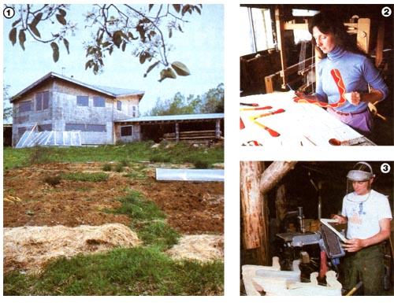

[1] The Larson-Darnell home is designed to incorporate a wraparound greenhouse on its southern point. [2] Cheslye hand paints all the custom boomerangs that they make. [3] Eric smooths the surfaces of a batch of their standard-design boomerangs.